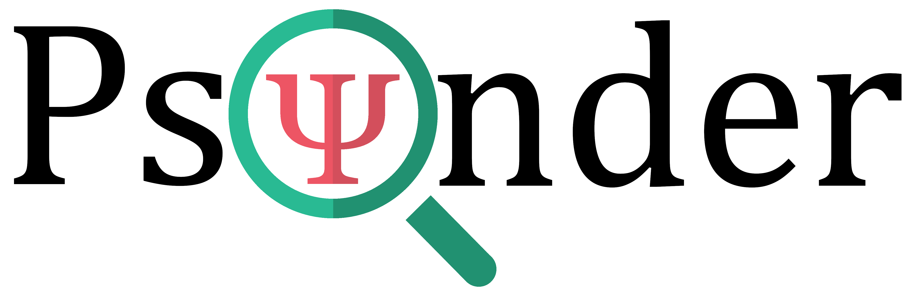

Psynder
Description
FR 🇫🇷 : Psynder est une solution visant à rapprocher des personnes souffrant de troubles psychologiques, et en particulier de dépression, avec des thérapeutes qualifiés. Au travers d’un questionnaire scientifiquement reconnu, l’application permet de redonner confiance à des personnes souvent repliées sur elles-mêmes et qui évitent de sortir de leur zone de confort.
Lien vers l'API: x2022psynder2788877055001.francecentral.cloudapp.azure.com:8080
Lien vers le client web: x2022psynder2788877055001.francecentral.cloudapp.azure.com (ou psynder.fr, voire www.psynder.fr)
EN 🇬🇧: Psynder is a solution aimed at bringing together people suffering from psychological disorders, and in particular depression, with qualified therapists. Through a scientifically recognized questionnaire, the application helps to restore confidence in people who are often withdrawn and who avoid leaving their comfort zone.
Link to the API : x2022psynder2788877055001.francecentral.cloudapp.azure.com:8080
Link to the web client : x2022psynder2788877055001.francecentral.cloudapp.azure.com (or psynder.fr, and even www.psynder.fr)
Members
- Stanislas HÉGRON
- Marc-Antoine WITTLING
- Nicolas BERNES
- Stanislas ZLOTINE
- Gaspard MATER
- Ronan BOUZIANE
- Lesly Lim
Client-Mobile for React-Native-CLI
This project was generated with React Native version: react-native-cli 2.0.1 and react-native 0.62.2
Development platform
It works for windows and Android
Installation
https://reactnative.dev/docs/environment-setup
Installation for device
Using a physical device: If you have a physical Android device, you can use it for development in place of an AVD by plugging it in to your computer using a USB cable.
Using a virtual device: Install [Android Studio] https://developer.android.com/studio/ on our computer. And open ./AwesomeProject/android, you can see the list of available Android Virtual Devices (AVDs) by opening the "AVD Manager" from within Android Studio.
Build
In the folder Mobile-Psynder execute react-native run-android
React-Native-CLI app
Your app is now open in your device.